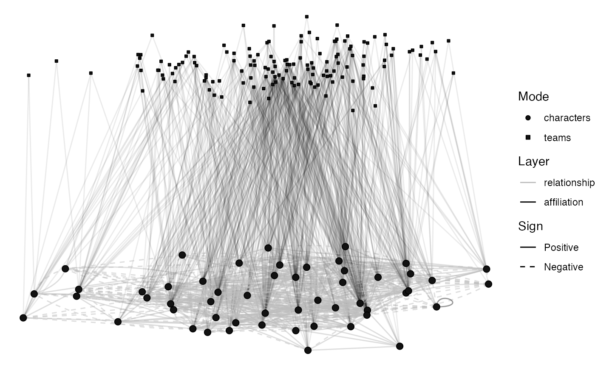

The "levels" layout draws each level of a multilevel network as a plane of its own, projected at an angle, with the ties within each level drawn on its plane and the ties between levels drawn between them.
Note that {graphlayouts} offers a layout of the same idea under the
name "multilevel". This one is named for its level argument.
Usage
layout_levels(
.data,
level,
method = c("all", "separate", "fix1", "fix2"),
circular = FALSE,
times = 1,
alpha = 25,
beta = 45,
FUN1 = graphlayouts::layout_with_stress,
FUN2 = graphlayouts::layout_with_stress
)
layout_tbl_graph_levels(
.data,
level,
method = c("all", "separate", "fix1", "fix2"),
circular = FALSE,
times = 1,
alpha = 25,
beta = 45,
FUN1 = graphlayouts::layout_with_stress,
FUN2 = graphlayouts::layout_with_stress
)Arguments
- .data
Some
{manynet}compatible network data.- level
A node attribute or a vector to hierarchically order levels. By default the levels are those already recorded in a "lvl" node attribute, as
manynet::to_multilevel()writes, or, for a two-mode network, the two modes, with whichever mode holds the ties within itself placed at the first level.- method
How the levels should be laid out: "all" (the default) lays every level out at once, "separate" lays each level out independently, and "fix1" and "fix2" lay out the first or second level respectively and derive the other from it. Note that all but "all" require ties within the levels they lay out.
- circular
Should the layout be transformed into a radial representation. Only possible for some layouts. Defaults to FALSE. Required for
{ggraph}compatibility.- times
Maximum number of iterations, where appropriate. Required for
{ggraph}compatibility, and ignored by the layouts that do not iterate.- alpha, beta
The angles, in degrees, at which the levels are projected onto the plane.
- FUN1, FUN2
The layout functions used for the first and second levels respectively by the "separate", "fix1" and "fix2" methods. By default both are
graphlayouts::layout_with_stress().
Examples
# fict_marvel interlocks a one-mode layer of ties among its characters
# with a two-mode layer of their affiliations, so it is laid out this way
# by default; the levels need not be named.
graphr(manynet::fict_marvel, labels = FALSE)
